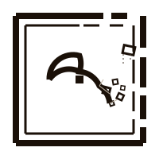

15 minutes, one take, live on stream. A viewer found Omo Space on Instagram, so Yifan showed him everything: the rooms, the agents, the edit review, the publishing desk, and an underground robot lab built from one prompt.